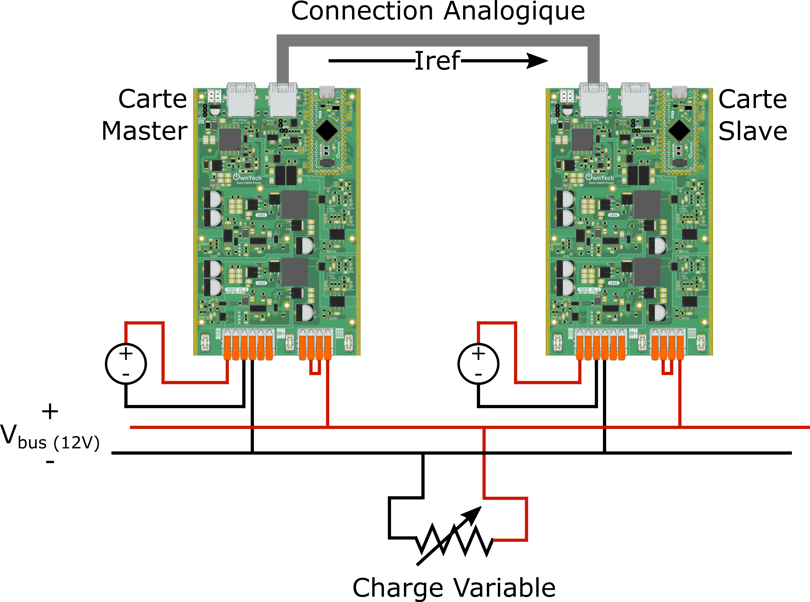
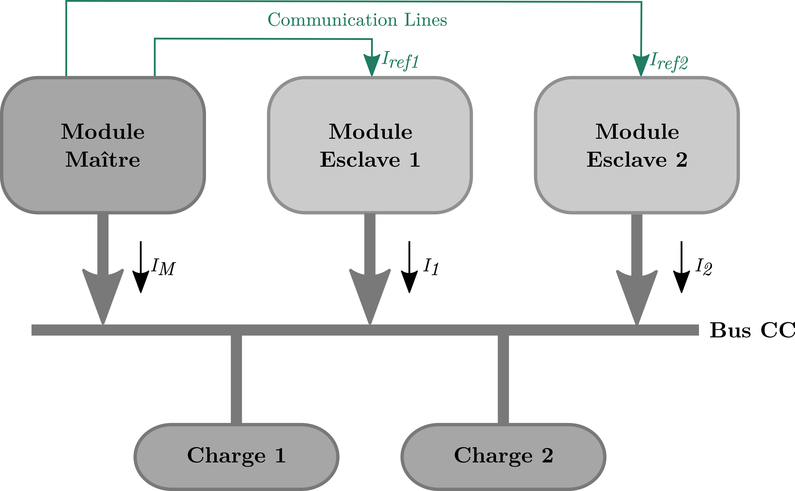

Current Control Experiment with Analog Communication - Code Example
Overview
This code example demonstrates a current control experiment utilizing analog communication between a MAIN board and multiple AUXILIARY boards. The MAIN board operates in voltage control mode and sends current references to the AUXILIARY boards, which work in current control mode. The goal is to regulate and synchronize current injection into an electrical network.
Experimental Setup
- Two boards are used: a
MAINboard and one or moreAUXILIARYboards. - The
MAINboard generates current references and communicates them to theAUXILIARYboards via analog communication. Communication Current Mode - Synchronization modules ensure coordination of PWM signals between
MAINandAUXILIARYboards. - Compensation control is utilized to equilibrate current between different legs of the system. compensation control
| Connexion diagram | Microgrid structure |
|---|---|
 |
 |
To run this example you would need: 1. a Voltage Source fixed at ~30V 2. 2 Twist boards 3. 1 RJ45 cable to make the communication link between boards. 4. A variable resistive load between approximatively 6 and 12 Ohm.
Communication Modules
1. Analog Communication
Analog communication facilitates the exchange of peak current references from the MAIN board to the AUXILIARY boards. This communication allows for current regulation and control within the system.
2. Synchronization
Synchronization modules ensure that PWM signals are aligned and coordinated between the MAIN and AUXILIARY boards. This synchronization is crucial for maintaining accurate current control and injection.
Code Usage
- Upload
src/main.cppto theMAINboard and eachAUXILIARYboard. - In the
main.cppfile, navigate to line 114 to find the macro definition:
Replace this macro with one of the following options based on the board you are flashing:
For a AUXILIARY board:
Example Workflow
MAINBoard Operation:- The
MAINboard operates in voltage control mode. - It generates current references within the 0-4000 range.
-
Using analog communication, it sends these references to the
AUXILIARYboard(s). -
AUXILIARYBoard Operation: - Each
AUXILIARYboard operates in current control mode. - It continuously monitors the analog communication from the
MAINboard. - The
AUXILIARYboard extracts the current reference and injects it into the electrical network. -
Compensation control ensures balanced current distribution among the system's legs.
-
Synchronization:
- The synchronization modules guarantee that PWM signals are coordinated between the
MAINandAUXILIARYboards. - This synchronization is vital for maintaining accurate and synchronized current injection.
Conclusion
This code example showcases a current control experiment that employs analog communication between a MAIN board and multiple AUXILIARY boards. By following the provided instructions and flashing the appropriate code, you can simulate and observe the regulation and synchronization of current injection into an electrical network. The combination of voltage control, current control, analog communication, and synchronization modules results in an efficient and coordinated system for current regulation.